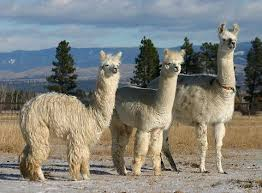
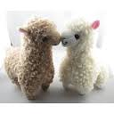

Zappos


The llama is a South American relative of the camel, though the llama does not have a hump. These sturdy creatures are domestic animals used by the peoples of the Andes Mountains. (Their wild relatives are guanacos and vicuñas). Native peoples have used llamas as pack animals for centuries. Typically, they are saddled with loads of 50 to 75 pounds (23 to 34 kilograms). Under such weight they can cover up to 20 miles (32 kilometers) in a single day. Pack trains of llamas, which can include several hundred animals, move large amounts of goods over even the very rough terrain of the Andes.Llamas are willing pack animals but only to a point. An overloaded llama will simply refuse to move. These animals often lie down on the ground and they may spit, hiss, or even kick at their owners until their burden is lessened.
Llamas graze on grass and, like cows, regurgitate their food and chew it as cud. They chomp on such wads for some time before swallowing them for complete digestion. Llamas can survive by eating many different kinds of plants, and they need little water. These attributes make them durable and dependable even in sparse mountainous terrain.
Llamas contribute much more than transportation to the human communities in which they live. Leather is made from their hides, and their wool is crafted into ropes, rugs, and fabrics. Llama excrement is dried and burned for fuel. Even in death, llamas can serve their human owners—some people slaughter them and eat their meat.
S